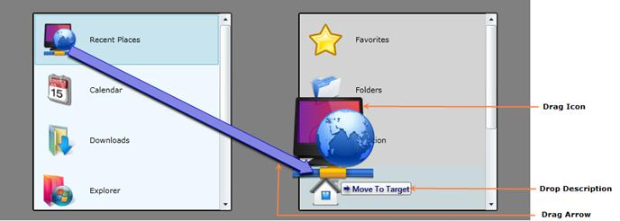

Figure 1139 : Structure of the Control
The following three main parts of the DragAndDropManager gives more visual clarity for the dragging process.
· The Drag Icon is the image that shows the object that is being dragged. .
· The Drop Description shows the drag mode and the name of the drop target.
· The Drag Arrow will follow the Drag Icon. This is helpful to know the drag source of the object.